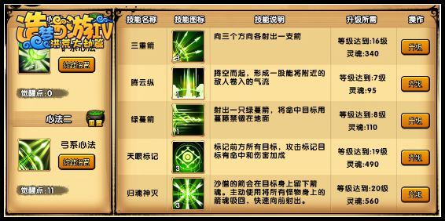
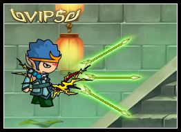
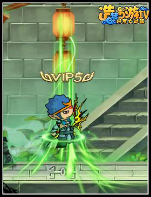
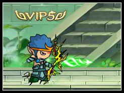
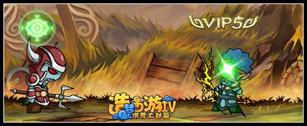
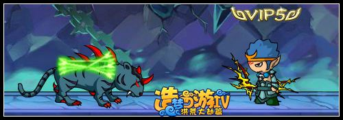
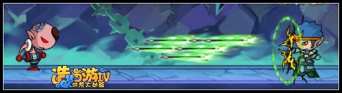
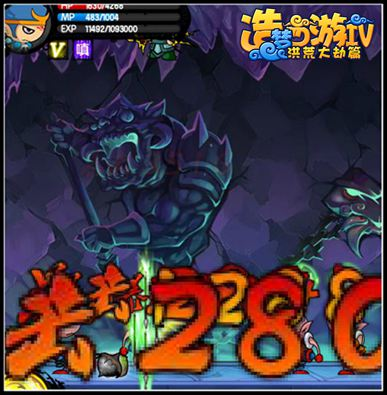

切记：第二心法按Q切换，冷却15秒
首先看看加点

第二心法主要是用来辅助第一心法的。所以加点可以不要这么高，不是主要输出。
1.三重箭：
解析：这个技能主要是用来拖延boss的，推荐1-3级不必加太多，看过小宇的直播视频都知道这个技能1级可以无限使用拖拉boss的移动，控制很好。
延伸：这个技能可以向八个方向发射，往左A+Y；往右D+Y；往上W+Y；往下S+Y；往左上A+W+Y；往右上D+W+Y；往左下A+S+Y；往右下D+S+Y。可以往八个方位发射的。

2.腾云纵
解析：这个技能就好比悟空的烈焰闪，白龙的突刺，唐僧的水分身，是一个不错的走位技能，打祖巫之类的是个不错的走位技能。
延伸：虽然走位不错但是有个缺点就是会飞的太高，不好操作。

3.绿蔓箭
解析：这个技能主要用来控制地面或者空中boss的移动，普攻两下加一个绿蔓箭控制boss的移动，很方便的控制。
延伸：绿蔓箭虽可以控制但是蓄力时间太长，而且boss被打中三下之后会进入透明状态，这个技能打boss不常用打竞技场的时候可以使用。

4.天眼标记
解析：这个技能好比第一心法的巫毒娃娃技能，开战前先来一个标记提高自己的攻击力度，之后放出大招。
延伸：这个技能只能对一些地面boss使用，对于空中boss不好击中，所以清理小怪的时候可以使用。

5.归魂神灭
我们普攻时会留下箭魂在小怪或者boss的身上。大招就是把这些箭魂全部吸回来之后发射出去。
解析：这个技能攻击力度大，加上标记伤害杠杠的。打地面boss的时候可以很好使用。
延伸：这个技能可以向八个方向发射，往左A+L；往右D+L；往上W+L；往下S+L；往左上A+W+L；往右上D+W+L；往左下A+S+L；往右下D+S+L。可以往八个方位发射的。但是会有一个缺点就是太死板，瞄准不好就不能对boss造成伤害，所以瞄准是个很考验操作的。


下面来说说沙僧要怎么连击第二心法（属于这次的重点）
我们体验弓箭清理小怪主要使用技能是这样的：
1.清理小怪：腾云纵（U）+三重箭（向下发射S+Y）循环三次左右，腾云纵（U）+归魂神灭（向下发射S+L）就可以清理一波小怪了。

2.在对付一些boss的时候我们的连招方式（主要是配合第一心法的辅助使用）
就以黄眉大王为例子：
进场手持弓箭，用出“天眼标记”之后快速切换武器：铲。用出傀儡娃娃加三个木魔舞之后二段跳躲开，等木魔舞消失之后，在来一轮一个木魔舞加一个傀儡娃娃，之后快速切换武器：弓。快速对准boss来一个天眼标记，之后腾云纵跑开，大概两轮下来boss就死了，对地面的boss我们都可以使用上述所说的方法。
3.对于飞行boss：如千年蝙妖、金翅大鹏雕之类
对于飞行boss我们打法还是一样的，首先我们快速用铲丢出一系列技能后（傀儡娃娃+三木魔舞），使用半月将boss推开后切换弓，弓主要是限制住飞行boss的移动，我们二段跳起用“绿蔓箭”技能控制住boss的移动，之后慢慢用腾云纵拖延时间给自己回蓝，等蓝回的差不多之后用出‘天眼标记’之后切换铲再来一套技能，boss就死光光了。
综合上面三点：对于不同的boss要使用不同的技能和配合才能事半功倍。